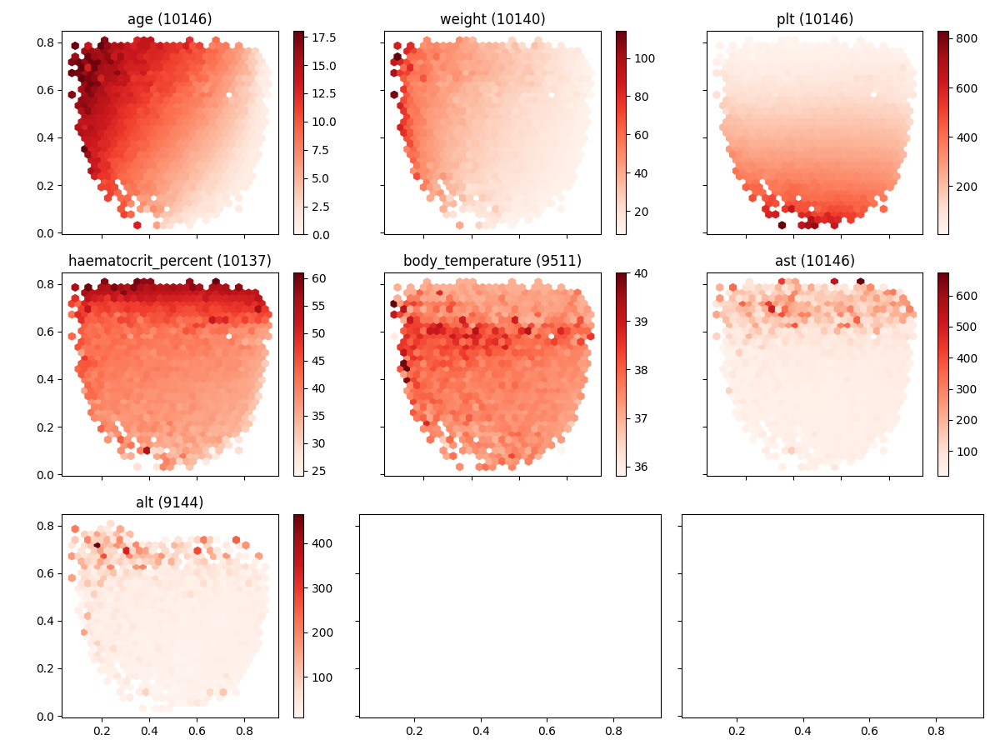

Note
Click here to download the full example code
Outcomes (numbers)¶
This script is useful to understand the distribution over the 2D projected space of the different numeric features and/or outcomes.
Out:
Adding... ast | max
Adding... alt | max
Data:
Unnamed: 0 study_no date abdominal_pain abdominal_tenderness abscess age aids ... rales_right rct respiratory_distress_description transfer_hospital transfer_reason diagnosis_final medication_regular rur_urb
409 409 01nva-003-... 2020-07-14 True False NaN 16.0 NaN ... NaN NaN NaN NaN NaN NaN NaN NaN
415 415 01nva-003-... 2020-07-28 True True False 17.0 False ... NaN NaN NaN NaN NaN NaN NaN NaN
435 435 01nva-003-... 2020-08-11 True False NaN 17.0 False ... NaN NaN NaN NaN NaN NaN NaN NaN
536 536 01nva-003-... 2020-10-07 True False NaN 16.0 False ... NaN NaN NaN NaN NaN NaN NaN NaN
581 581 01nva-003-... 2020-11-03 True False False 18.0 False ... NaN NaN NaN NaN NaN NaN NaN NaN
... ... ... ... ... ... ... ... ... ... ... ... ... ... ... ... ... ...
90856 5230 fl-731 2008-08-25 True NaN NaN 17.0 NaN ... NaN NaN NaN NaN NaN NaN NaN NaN
90865 5239 fl-733 2008-09-15 True NaN NaN 17.0 NaN ... NaN NaN NaN NaN NaN NaN NaN NaN
90872 5246 fl-734 2008-10-07 True NaN NaN 18.0 NaN ... NaN NaN NaN NaN NaN NaN NaN NaN
90874 5248 fl-734 2008-10-09 False NaN NaN 18.0 NaN ... NaN NaN NaN NaN NaN NaN NaN NaN
90921 5295 fl-740 2008-11-12 True NaN NaN 15.0 NaN ... False NaN NaN BV CHO RAY XHTH KHONG ON NaN NaN NaN
[10146 rows x 420 columns]
Unnamed: 0 int64
study_no object
date datetime64...
abdominal_pain object
abdominal_tenderness object
...
transfer_hospital object
transfer_reason object
diagnosis_final object
medication_regular object
rur_urb object
Length: 420, dtype: object
10146
alt 9144
body_temperature 9511
haematocrit_percent 10137
weight 10140
age 10146
plt 10146
ast 10146
dtype: int64
Model:
Autoencoder(
(encoder): Sequential(
(0): Linear(in_features=5, out_features=3, bias=True)
(1): Sigmoid()
(2): Linear(in_features=3, out_features=2, bias=True)
(3): Sigmoid()
)
(decoder): Sequential(
(0): Linear(in_features=2, out_features=3, bias=True)
(1): Sigmoid()
(2): Linear(in_features=3, out_features=5, bias=True)
(3): Sigmoid()
)
)
Encoded:
[[0.14902477 0.7655889 ]
[0.26561728 0.6817843 ]
[0.23622908 0.7446488 ]
...
[ nan nan]
[ nan nan]
[ nan nan]]
Data:
Unnamed: 0 study_no date abdominal_pain abdominal_tenderness abscess age aids ... respiratory_distress_description transfer_hospital transfer_reason diagnosis_final medication_regular rur_urb x y
409 409 01nva-003-... 2020-07-14 True False NaN 16.0 NaN ... NaN NaN NaN NaN NaN NaN 0.1490 0.7656
415 415 01nva-003-... 2020-07-28 True True False 17.0 False ... NaN NaN NaN NaN NaN NaN 0.2656 0.6818
435 435 01nva-003-... 2020-08-11 True False NaN 17.0 False ... NaN NaN NaN NaN NaN NaN 0.2362 0.7446
536 536 01nva-003-... 2020-10-07 True False NaN 16.0 False ... NaN NaN NaN NaN NaN NaN 0.0760 0.7366
581 581 01nva-003-... 2020-11-03 True False False 18.0 False ... NaN NaN NaN NaN NaN NaN 0.1045 0.7024
... ... ... ... ... ... ... ... ... ... ... ... ... ... ... ... ... ...
90856 5230 fl-731 2008-08-25 True NaN NaN 17.0 NaN ... NaN NaN NaN NaN NaN NaN NaN NaN
90865 5239 fl-733 2008-09-15 True NaN NaN 17.0 NaN ... NaN NaN NaN NaN NaN NaN NaN NaN
90872 5246 fl-734 2008-10-07 True NaN NaN 18.0 NaN ... NaN NaN NaN NaN NaN NaN NaN NaN
90874 5248 fl-734 2008-10-09 False NaN NaN 18.0 NaN ... NaN NaN NaN NaN NaN NaN NaN NaN
90921 5295 fl-740 2008-11-12 True NaN NaN 15.0 NaN ... NaN BV CHO RAY XHTH KHONG ON NaN NaN NaN NaN NaN
[10146 rows x 422 columns]
11 12 13 14 15 16 17 18 19 20 21 22 23 24 25 26 27 28 29 30 31 32 33 34 35 36 37 38 39 40 41 42 43 44 45 46 47 48 49 50 51 52 53 54 55 56 57 58 59 60 61 62 63 64 65 66 67 68 69 70 71 72 73 74 75 76 77 78 79 80 81 82 83 84 85 86 87 88 89 90 91 92 93 94 95 96 97 98 99 100 101 102 103 104 105 106 107 108 109 110 111 112 113 114 115 116 117 118 119 120 121 122 123 124 125 126 127 128 129 130 131 132 133 134 135 136 137 138 139 140 141 142 143 144 145 146 147 | # Library
import pickle
import pandas as pd
import numpy as np
import matplotlib as mpl
# Specific
from torch.utils.data import DataLoader
from sklearn.preprocessing import MinMaxScaler
# Specific
from pkgname.core.AE.autoencoder import get_device, set_seed
from pkgname.utils.data_loader import load_dengue, IQR_rule
# Local
import _utils
# ------------------------------
# Constants
# ------------------------------
# Load constants
features = _utils.features
others = _utils.others
mappings = _utils.mappings
aggregation = _utils.aggregation
cmaps = _utils.cmaps
# Define outcomes
outcomes = [
"age",
"weight",
"plt",
"haematocrit_percent",
"body_temperature",
"ast",
"alt"
]
# Ensure all outcomes are in aggregation
for c in outcomes:
if c not in aggregation:
print("Adding... %23s | max" % c)
aggregation[c] = 'max'
# Define rows and columns
nrows, ncols = 3, 3
# ------------------------------
# Load data
# ------------------------------
# Load data
data = _utils.load_data()
# Filter data (age, iqr, ...)
data = data[data.age.between(0.0, 18.0)]
data = data[data.plt < 50000] # extreme outlier
data = data[data.ast < 1500] # extreme outlier
# Filter outliers
data = IQR_rule(data, [
'plt',
#'haematocrit_percent',
#'body_temperature'
])
# Show data
print("\nData:")
print(data)
print(data.dtypes)
print(data.index.nunique())
print(data[outcomes].count().sort_values())
# ------------------------------
# Load Model
# ------------------------------
# Load model
model = _utils.load_model()
# Show
print("\nModel:")
print(model)
# ------------------------------
# Projections
# ------------------------------
# .. note: Ideally the method to preprocess
# data should be included in the
# model (like a sklearn pipeline)
# Features
datap = data[features].copy(deep=True)
# Scale first
datap = MinMaxScaler().fit_transform(datap)
# Encode
encoded = model.encode_inputs( \
DataLoader(datap, 16, shuffle=False))
# Include in original dataset
data[['x', 'y']] = encoded
# Show
print("\nEncoded:")
print(encoded)
print("\nData:")
print(data)
# ------------------------------
# Visualization
# ------------------------------
# Libraries
import matplotlib.pyplot as plt
# Figure with hexbins
f3, axes3 = plt.subplots(nrows, ncols,
figsize=(12, 9), sharex=True, sharey=True)
# Loop
for i, c in enumerate(outcomes):
# Plot hexbin
m = axes3.flat[i].hexbin(data.x, data.y,
C=data[c], label=c, gridsize=30,
cmap=cmaps.get(c, 'Reds'))
# Configure
axes3.flat[i].set(aspect='equal',
title='%s (%s)' % (c, data[c].count()))
plt.colorbar(m, ax=axes3.flat[i])
# Configure
plt.tight_layout()
# Show
plt.show()
|
Total running time of the script: ( 0 minutes 5.107 seconds)